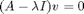
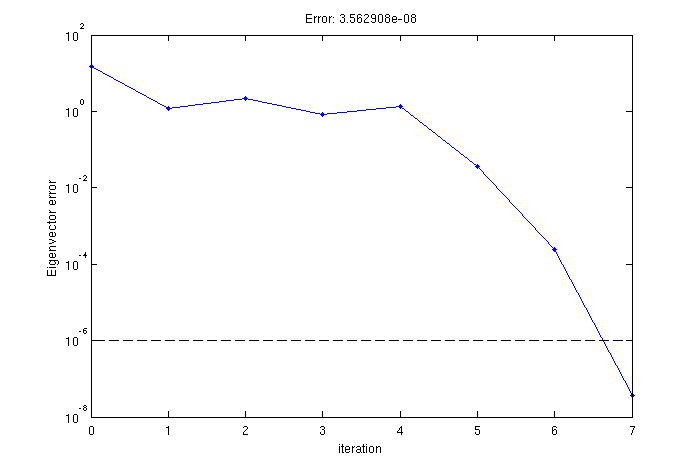

eigenmode_solver
Find an eigenmode of the system , using rayleigh quotient iteration.
Contents
Description
Given an initial guess, an eigenmode of the system is found. This function does not require knowledge of the full system matrix A, only function handles for multiplication by A and finding x for (A-lambda I)x = b.
Uses the rayleigh quotient iteration algorithm as described in page 207 of Numerical Linear Algebra, Trefethen and Bau.
function [lambda, v] = eigenmode_solver(mult_A, solve_A_shifted, vis_current, ... v_guess, max_iters, err_lim)
Input parameters
- mult_A is a function handle that returns A*x, given x.
- solve_A_shifted is a function handle that accepts scalar lambda and vector b and returns the solution, x, of (A - lambda I) x = b.
- vis_current is a function handle that accepts lambda and v and can perform a user-defined plotting function in order to monitor progress.
- v_guess is a the initial guess vector for the eigenmode.
- max_iters is the maximum number of iterations to allow, typically 10.
- err_lim is the error limit below which the algorithm successfully terminates.
Output parameters
- lambda and v represent the solution to .
Example
% Generate a random, complex matrix and vector. n = 100; randn('state', 1); A = randn(n) + 1i * randn(n); v_guess = randn(n, 1) + 1i * randn(n, 1);
% Form the needed callback functions. mult_A = @(x) A * x; solve_A_shifted = @(shift, b) (A - shift * eye(n)) \ b; vis_current = @(lambda, v) lambda; % Do nothing.
% Find the eigenmode and show the error as well. [lambda, v] = eigenmode_solver(mult_A, solve_A_shifted, vis_current, ... v_guess, 10, 1e-6); title(sprintf('Error: %e', norm((A - lambda*eye(n))*v) / norm(v)));
This generates the following figure

Source code
Normalize guess and estimate lambda.
v = v_guess(:) / norm(v_guess);
lambda = v' * mult_A(v);
% Perform rayleigh iterations.
for k = 1 : max_iters+1
% Compute error.
err(k) = norm(mult_A(v) - lambda * v); % Compute error.
% Plot error.
vis_current(lambda, v);
semilogy(0:(k-1), err, '.-'); % Plot error.
a = axis;
hold on; semilogy(a(1:2), err_lim * [1 1], 'k--'); hold off;
ylabel('Eigenvector error'); xlabel('iteration'); drawnow;
% Check for termination condition.
if (err(k) < err_lim) || (k >= max_iters) % Check if we're done
break
end
% Perform the rayleigh quotient update.
w = solve_A_shifted(lambda, v); % Solve for new eigenvector guess (inverse iteration).
v = w / norm(w); % Normalize.
lambda = v' * mult_A(v); % Solve for new eigenvalue guess (rayleigh quotient).
end